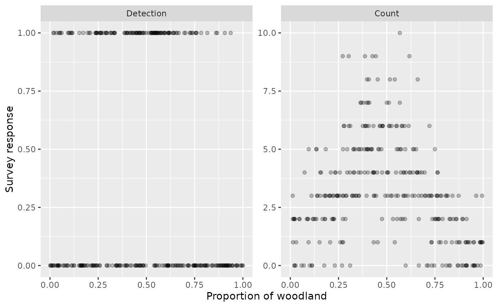
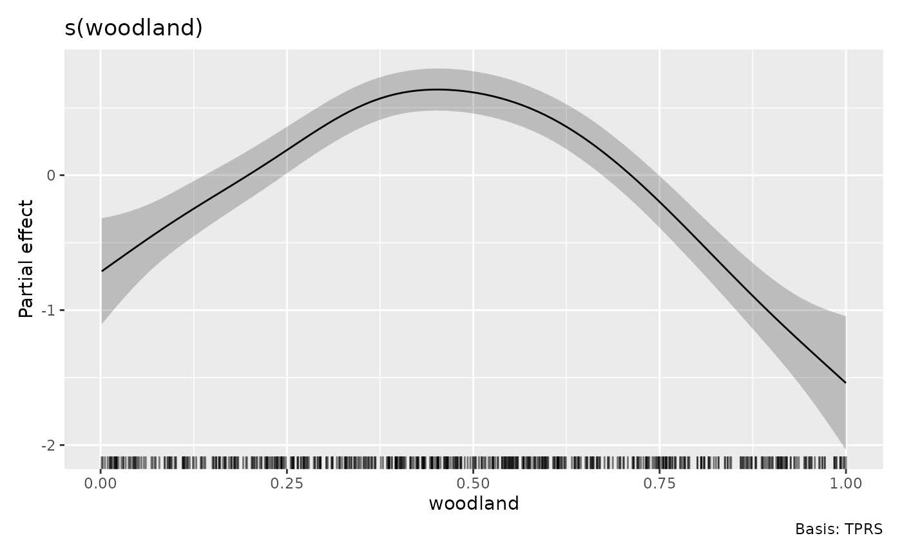
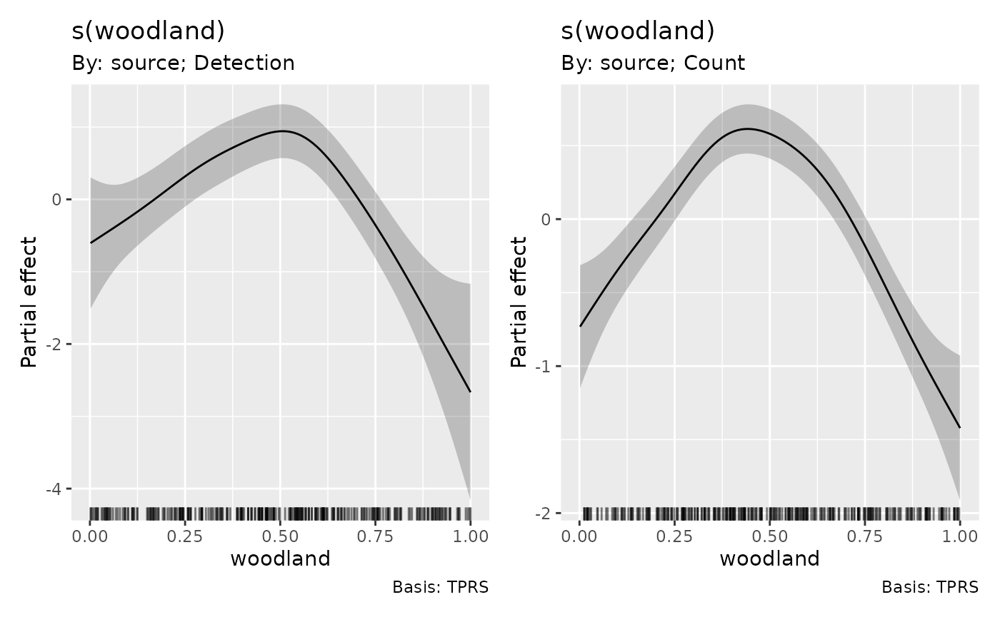
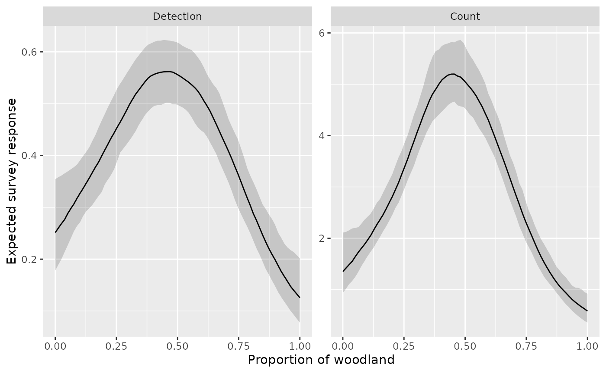
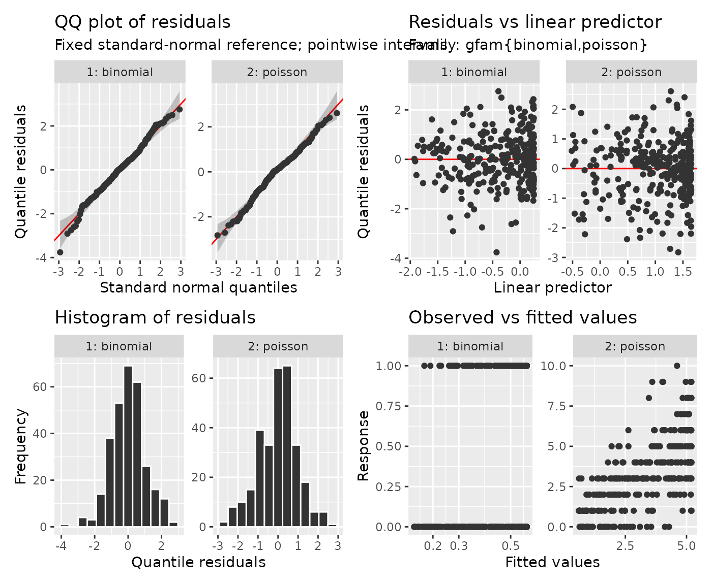
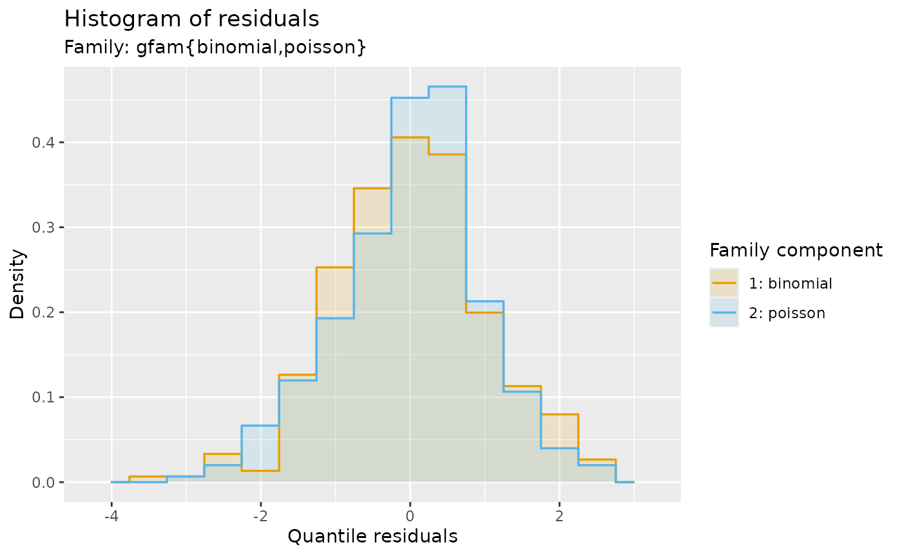
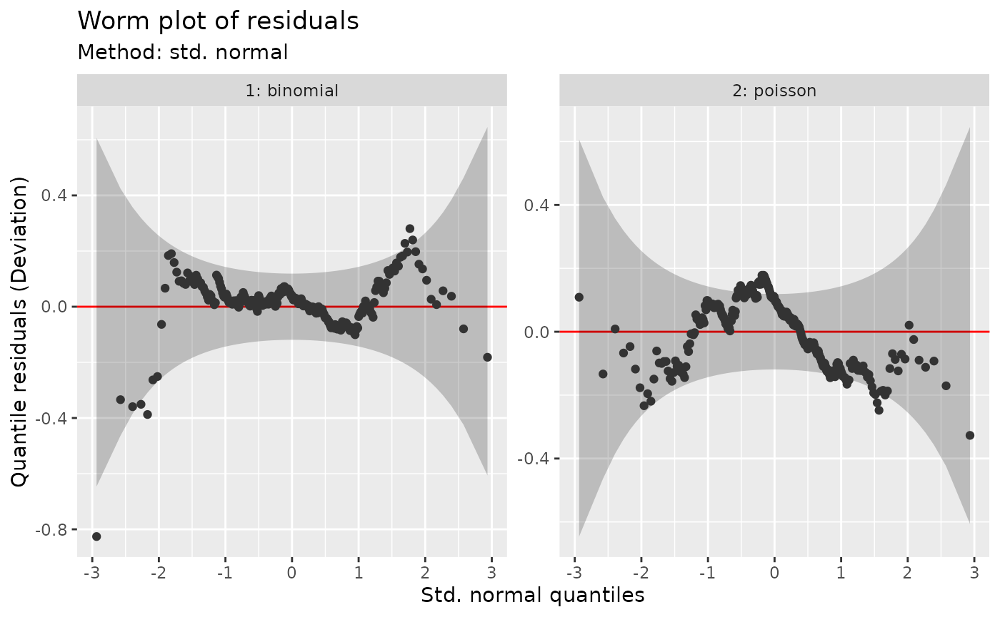
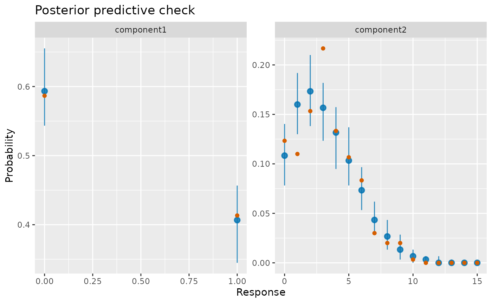

Combining surveys with different response distributions
Source:vignettes/articles/gfam-support.Rmd
gfam-support.RmdCan two surveys inform the same environmental response?
Suppose one bird survey records whether a species was detected, while
another records its count during a fixed observation period. Both might
tell us about the response to woodland cover, but a binary observation
is not a count. mgcv::gfam() fits one model in which each
row has its own response family. The new gratia support provides
response draws and diagnostics that respect that membership. This
differs from a delta model: here the two sources supply separate
observations, rather than occurrence and positive abundance being parts
of a single response distribution.
We simulate fixed-effort surveys at independent sites. The log odds of detection and the log expected count have different intercepts but share the same smooth response to woodland cover. Sharing the curve assumes that a change in cover has the same effect on log odds and log expected count. We compare this assumption with survey-specific curves below.
The code needs mgcv and gratia, and uses dplyr and ggplot2 for presentation. All are gratia dependencies. The example has 600 observations and uses 200 coefficient draws; increase the latter for final interval estimates.
set.seed(241)
survey <- data.frame(
woodland = runif(600),
source = factor(rep(c("Detection", "Count"), each = 300),
levels = c("Detection", "Count"))
)
survey$family_id <- as.integer(survey$source)
habitat <- function(x) 1.8 * sin(pi * x) - 0.8 * x
eta <- ifelse(survey$source == "Detection", -1.3, 0.2) +
habitat(survey$woodland)
survey$observed <- ifelse(survey$source == "Detection",
rbinom(600, size = 1, prob = plogis(eta)),
rpois(600, lambda = exp(eta)))
ggplot(survey, aes(woodland, observed)) +
geom_point(alpha = 0.25) +
facet_wrap(~ source, scales = "free_y") +
labs(x = "Proportion of woodland", y = "Survey response")
The binary panel contains only zero and one. The count panel has a
wider range and variance that grows with the mean. A binomial family
with one trial and a Poisson family are appropriate for the simulated
protocols. For real counts, extra variation may require
nb() instead of Poisson; residual checks help assess that
choice.
Share the smooth, retain different intercepts and links
The two-column response supplies the observation and its position in
the family list. Family 1 is binomial and family 2 is Poisson. The
factor source supplies different intercepts. A single
s(woodland) supplies the shared effect on both linear
predictors, and REML estimates its smoothness.
joint <- gam(cbind(observed, family_id) ~ source + s(woodland, k = 10),
data = survey, family = gfam(list(binomial(), poisson())), method = "REML")
draw(joint, parametric = FALSE)
A positive smooth contribution multiplies the expected count by
exp(effect) and multiplies detection odds by the same
quantity. It does not add the same amount to the detection probability
and count. The fitted smooth rises toward intermediate cover and then
declines, consistent with the generating response. Its centering
constraint sets the reference for the partial effect. The different
intercepts determine the absolute levels.
The mgcv grouped-family documentation explains the response encoding and sharing of terms. This example replaces its generic simulation with two explicitly described survey protocols.
Sharing a smooth can improve precision if its assumption is reasonable. A model with different smooths provides a useful comparison when the surveys have enough information to estimate them:
separate <- gam(cbind(observed, family_id) ~ source +
s(woodland, by = source, k = 10),
data = survey, family = gfam(list(binomial(), poisson())), method = "REML")
draw(separate, parametric = FALSE)
Compare the shapes and their uncertainty, particularly at the ends of the cover range. The binary survey contains less information about the curve than the count survey, so its wider intervals leave more uncertainty about its shape. The similar fitted shapes support sharing in this simulation. For your own surveys, use separate smooths if the protocols imply different responses to cover, and include offsets when survey effort varies.
Predict the appropriate quantity for each survey
Prediction rows must identify their distribution. This matters even
if their covariates are identical. We generate the same cover grid for
both protocols and pass family_index explicitly.
Response-scale fitted_samples() applies each row’s inverse
link to every shared coefficient draw.
grid <- expand.grid(woodland = seq(0, 1, length.out = 80),
source = levels(survey$source))
grid$source <- factor(grid$source, levels = levels(survey$source))
index <- as.integer(grid$source)
means <- fitted_samples(joint, data = grid, family_index = index,
n_draws = 200, seed = 242)
intervals <- means |>
group_by(.row) |>
summarise(estimate = median(.fitted), lower = quantile(.fitted, 0.025),
upper = quantile(.fitted, 0.975), .groups = "drop")
curves <- bind_cols(grid, intervals |> select(-.row))
ggplot(curves, aes(woodland, estimate)) +
geom_ribbon(aes(ymin = lower, ymax = upper), alpha = 0.2) +
geom_line() +
facet_wrap(~ source, scales = "free_y") +
labs(x = "Proportion of woodland", y = "Expected survey response")
The first curve estimates detection probability; the second estimates expected count. These are pointwise intervals for expected responses, not prediction intervals for future observations. Their shared coefficient draws also retain uncertainty shared between the two curves. The count response peaks near intermediate cover, while the logit transform compresses the detection response between zero and one.
The fitted means can also be checked against mgcv’s native prediction. For this response expression, mgcv needs both columns named in the response expression so it can evaluate the membership column. The placeholder observation is ignored for the prediction:
native_grid <- transform(grid, observed = 0, family_id = index)
head(data.frame(grid, expected = predict(joint, native_grid, type = "response")))
#> woodland source expected
#> 1 0.00000000 Detection 0.2491972
#> 2 0.01265823 Detection 0.2586062
#> 3 0.02531646 Detection 0.2682335
#> 4 0.03797468 Detection 0.2780466
#> 5 0.05063291 Detection 0.2879976
#> 6 0.06329114 Detection 0.2980352To predict actual observations at these cover values, use
simulate(). It holds the fitted coefficients and nuisance
parameters fixed, then draws binomial or Poisson responses as
appropriate. Coefficient uncertainty is a separate source of variation:
posterior_samples() adds that uncertainty.
replicates <- simulate(joint, data = grid, family_index = index,
nsim = 200, seed = 243)
future <- data.frame(grid, lower = apply(replicates, 1, quantile, 0.025),
upper = apply(replicates, 1, quantile, 0.975))
future |>
filter(woodland > 0.49, woodland < 0.51)
#> woodland source lower upper
#> 1 0.4936709 Detection 0 1.000
#> 2 0.5063291 Detection 0 1.000
#> 3 0.4936709 Count 1 9.000
#> 4 0.5063291 Count 2 9.025Even a tightly estimated detection probability yields a future binary response of zero or one. Counts vary substantially around their fitted mean. The response families supply this variation; drawing only smooth coefficients would miss it. Membership is a position in the family list, not an arbitrary factor code: retain the same mapping when constructing your own prediction data.
Check each observation process
Raw residual magnitudes are not comparable between binary and count responses. Probability integral transform (PIT) residuals locate each observation in its own fitted distribution. At a discrete observation, gratia randomises within its probability mass; quantile residuals transform those probabilities to standard-normal scores. See Model diagnostics for the reference calculations and the distinction from posterior predictive checks.
appraise(joint, type = "quantile", by_family = TRUE, seed = 244)
Component facets help find a failure confined to one survey. Look for tail departures in QQ plots, changing residual spread across fitted values, or disagreement in the observed-versus-fitted panels. Here the component scores show approximate agreement with their references despite the different scales of the original responses.
Pooling standard-normal residuals is also possible. The colours retain each component’s identity; histogram densities are calculated separately with common bin edges. Traditional deviance or response residuals instead default to separate component facets because their scales differ.
residuals_hist_plot(joint, type = "quantile", by_family = FALSE, seed = 244)
worm_plot(joint, type = "quantile", by_family = TRUE, seed = 244)
A worm plot subtracts the reference quantile, making curvature and departures near zero easier to see. The separate panels show which observation process contributes each pattern.
posterior_predictive_plot(joint, n = 50, seed = 245)
The count panel has some departures at individual counts, despite reasonable overall shape agreement. Its intervals are pointwise and have appreciable simulation error with 50 replicates; increase that number before judging individual probability masses closely.
The posterior predictive plot compares separate observed response distributions with replicated surveys, including approximate coefficient uncertainty. For these discrete responses the bars describe variation in replicated probability masses, not intervals on an individual count. A pooled response histogram would mix probabilities with counts and answer no useful survey question.
Limits when extending the model
gfam() accepts ordinary and extended mgcv families with
a scalar response, including negative binomial, Tweedie, beta, scaled-t
and ordered categories. Gratia response simulation uses each component’s
fitted parameters and can simulate ordered-category codes.
Response-scale fitted draws for ordinal components remain unsupported
because an ordinal response requires a vector of category probabilities;
link-scale fitted draws are available. General families with several
linear predictors are not gfam() components.
Missing required predictors or membership give missing predictions.
Missing responses alone do not prevent prediction. With
na.exclude, excluded fitting rows are restored as
NA in fitted draws and simulations, while checks use the
observations actually fitted. Censored components can simulate latent
responses, but a posterior predictive comparison of censored
observations also needs a censoring mechanism, which is not supplied
automatically.
For grouped binomial proportions, supply the number of trials in
weights; for Gaussian and Gamma components these weights
represent response precision. Prediction data default to weights of one
unless you supply them. These interpretations differ and should follow
the measurement protocol.
Use the component diagnostics to assess the observation distributions and the separate-curve comparison to decide whether to share the cover response. Together they address both parts of the model that connect these surveys.